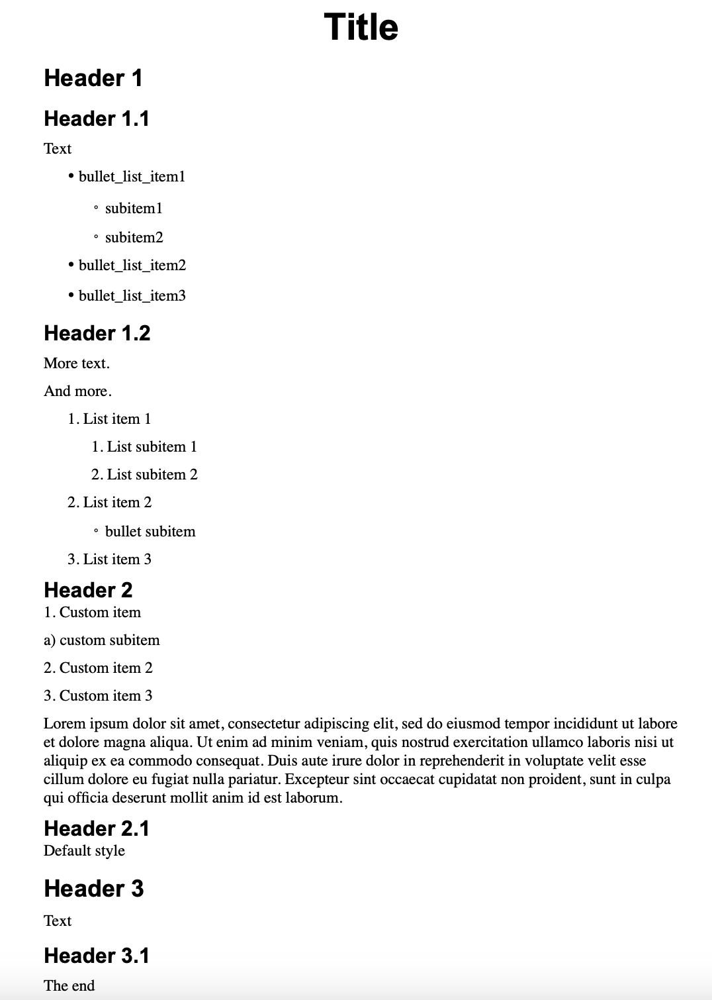
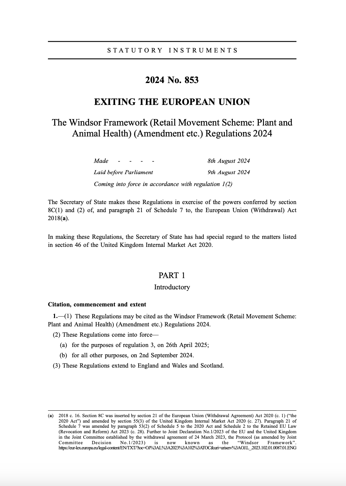

Configure structure extraction using patterns
It is possible to configure structure type in Dedoc: option document_type in the parameters dictionary
(Api parameters description, Structure type configuring).
The default structure type (when document_type="other", see Default document structure type) allows to get a basic document structure which is fixed.
If you want to change this structure, e.g. names of line types (nodes) or their levels in the tree hierarchy, you can use structure patterns.
Use patterns in Dedoc library
If you use Dedoc as a library, you can use existing pattern classes Patterns for DefaultStructureExtractor
or implement your own custom pattern based on AbstractPattern.
Let’s see some examples. First of all, we enlist all the required imports:
import re
from typing import List
import html2text
from dedoc.api.api_utils import json2html
from dedoc.data_structures import BoldAnnotation, HierarchyLevel, LineWithMeta, UnstructuredDocument
from dedoc.metadata_extractors import DocxMetadataExtractor, PdfMetadataExtractor
from dedoc.readers import DocxReader, PdfTabbyReader
from dedoc.structure_constructors import TreeConstructor
from dedoc.structure_extractors import DefaultStructureExtractor
from dedoc.structure_extractors.patterns import DottedListPattern, LetterListPattern, RegexpPattern, TagHeaderPattern, TagListPattern
from dedoc.structure_extractors.patterns.abstract_pattern import AbstractPattern
Using information from readers
Assume we need to parse file with_tags.docx, which looks like follows:
{kind=link}

DOCX document example
In this document, there are headers that are marked as heading lines by user, as well as headers highlighted by formatting (bold font of a larger size, e.g. Header 2 or Header 2.1). Also, there are automatic lists (list items, bullet list items) and raw text list items (custom list items).
Let’s read the document by DocxReader and see a result:
docx_reader = DocxReader()
docx_metadata_extractor = DocxMetadataExtractor()
structure_extractor = DefaultStructureExtractor()
structure_constructor = TreeConstructor()
docx_file_path = "test_dir/with_tags.docx"
docx_document = docx_reader.read(file_path=docx_file_path)
print("\n\nDocument lines\n")
for document_line in docx_document.lines:
print(document_line)
Document lines
LineWithMeta(Title, tagHL=(1, 1, 'header'), HL=None)
LineWithMeta(Header 1, tagHL=(None, None, 'unknown'), HL=None)
LineWithMeta(Header 1.1, tagHL=(1, 3, 'header'), HL=None)
LineWithMeta(Text, tagHL=(None, None, 'unknown'), HL=None)
LineWithMeta(· bullet_list_item1, tagHL=(2, 1, 'list_item'), HL=None)
LineWithMeta(◦ subitem1, tagHL=(2, 1, 'list_item'), HL=None)
LineWithMeta(◦ subitem2, tagHL=(2, 1, 'list_item'), HL=None)
...
LineWithMeta(Header 2, tagHL=(None, None, 'unknown'), HL=None)
LineWithMeta(1. Custom item, tagHL=(None, None, 'unknown'), HL=None)
LineWithMeta(a) custom subitem, tagHL=(None, None, 'unknown'), HL=None)
LineWithMeta(2. Custom item 2, tagHL=(None, None, 'unknown'), HL=None)
LineWithMeta(3. Custom item 3, tagHL=(None, None, 'unknown'), HL=None)
...
For each line, its text and hierarchy level information is printed (tagHL, HL).
See also
Documentation of classes
LineWithMeta,LineMetadata,HierarchyLevelmay be helpful;Hierarchy level for document lines may be useful for understanding
HierarchyLevel.Types of textual lines can be helpful to find out which readers are able to extract certain types of lines.
As we see, the reader filled the metadata.tag_hierarchy_level field (tagHL):
some lines have types
headerorlist_itemand non-empty values oflevel_1andlevel_2;some lines have
unknowntype and empty values of levels - it means that the reader couldn’t extract any information for these lines.
To extract structure and construct a document tree, we need:
add metadata to the document (call metadata extractor);
fill
metadata.hierarchy_level(call structure extractor);construct a document tree (call structure constructor).
Let’s use information from DocxReader about headers and list items during structure extraction step.
For this purpose, we initialize TagHeaderPattern and
TagListPattern classes.
These patterns are given to the extract() method,
which applies patterns if lines match them, else line becomes simple raw text line.
patterns = [
TagHeaderPattern(line_type="custom_header", level_1=1, can_be_multiline=False),
TagListPattern(line_type="custom_list", level_1=2),
]
docx_document = structure_extractor.extract(document=docx_document, parameters={"patterns": patterns})
docx_document.metadata = docx_metadata_extractor.extract(file_path=docx_file_path)
docx_parsed_document = structure_constructor.construct(document=docx_document).to_api_schema()
Let’s see the resulting tree. In the code below we use an auxiliary function to convert ParsedDocument
to the HTML representation and print it:
html = json2html(
paragraph=docx_parsed_document.content.structure,
attachments=docx_parsed_document.attachments,
tables=docx_parsed_document.content.tables,
text=""
)
print(f"\n\nDocument tree\n{html2text.html2text(html)}")
Document tree
**** id = 0 ; type = root
**Title** id = 0.0 ; type = custom_header
**Header 1** id = 0.0.0 ; type = raw_text
**Header 1.1** id = 0.0.1 ; type = custom_header
Text id = 0.0.1.0 ; type = raw_text
· bullet_list_item1 id = 0.0.1.1 ; type = custom_list
◦ subitem1 id = 0.0.1.2 ; type = custom_list
◦ subitem2 id = 0.0.1.3 ; type = custom_list
...
**Header 2
**1\. Custom item
a) custom subitem
2\. Custom item 2
3\. Custom item 3
... id = 0.0.2.4.0 ; type = raw_text
...
As wee see, lines with types header and list_item from tagHL became custom_header and custom_list according to the patterns settings.
But Header 2 and custom items became raw_text and were merged into one node (can_be_multiline=True for raw_text lines).
Using regular expressions
In this section, we’ll transform Header 2 and custom items to the lines with types header and list_item.
First of all, we introduce an auxiliary function print_document_tree to avoid code duplication:
def print_document_tree(document: UnstructuredDocument, patterns: List[AbstractPattern]) -> None:
document = structure_extractor.extract(document=document, parameters={"patterns": patterns})
parsed_document = structure_constructor.construct(document=document).to_api_schema()
html = json2html(paragraph=parsed_document.content.structure, attachments=parsed_document.attachments, tables=parsed_document.content.tables, text="")
print(f"\n\nDocument tree\n{html2text.html2text(html)}")
To handle lines basing on their text only (without tagHL information), we can use patterns based on regular expressions.
For this purpose, we can use class RegexpPattern and classes that are based on it,
e.g. DottedListPattern and LetterListPattern.
patterns = [
TagHeaderPattern(line_type="custom_header", level_1=1, can_be_multiline=False),
TagListPattern(line_type="custom_list", level_1=2),
DottedListPattern(line_type="custom_list", level_1=2, can_be_multiline=False), # for lists like 1.
LetterListPattern(line_type="custom_list", level_1=3, level_2=1, can_be_multiline=False), # for lists like a)
RegexpPattern(regexp=re.compile(r"^header\s+\d+\.\d+"), line_type="custom_header", level_1=1, level_2=2, can_be_multiline=False),
RegexpPattern(regexp=re.compile(r"^header\s+\d+"), line_type="custom_header", level_1=1, level_2=1, can_be_multiline=False)
]
print_document_tree(document=docx_document, patterns=patterns)
Document tree
**** id = 0 ; type = root
**Title** id = 0.0 ; type = custom_header
**Header 1** id = 0.1 ; type = custom_header
**Header 1.1** id = 0.1.0 ; type = custom_header
Text id = 0.1.0.0 ; type = raw_text
· bullet_list_item1 id = 0.1.0.1 ; type = custom_list
◦ subitem1 id = 0.1.0.2 ; type = custom_list
◦ subitem2 id = 0.1.0.3 ; type = custom_list
...
**Header 2
********** id = 0.2 ; type = custom_header
1\. Custom item
id = 0.2.0 ; type = custom_list
a) custom subitem
id = 0.2.0.0 ; type = custom_list
2\. Custom item 2
id = 0.2.1 ; type = custom_list
3\. Custom item 3
id = 0.2.2 ; type = custom_list
...
In this case, Header 2 and custom items became custom_header and custom_list as well as Header 1 and bullet list items.
Note
The order of the patterns is important: if you place regexp patterns before tag patterns, then tag patterns will be ignored. It happens because some lines match both regexp and tag patterns.
See also
You can see the full list of patterns with their descriptions here: Patterns for DefaultStructureExtractor.
The next section contains a more real-life example.
Practical example: get structured PDF
Assume we need to parse file law.pdf, the first page of which looks like follows:
{kind=link}

PDF document example
This document has a certain structure with parts, chapters and numbered lists.
Let’s read the document using PdfTabbyReader and see the result:
pdf_reader = PdfTabbyReader()
pdf_metadata_extractor = PdfMetadataExtractor()
pdf_file_path = "test_dir/law.pdf"
pdf_document = pdf_reader.read(file_path=pdf_file_path)
pdf_document.metadata = pdf_metadata_extractor.extract(file_path=pdf_file_path)
print("\n\nDocument lines\n")
for document_line in pdf_document.lines[:10]:
print(document_line)
Document lines
LineWithLocation(S T A T U T O R Y I N S T R U M E N T S, tagHL=(None, None, 'unknown'), HL=None)
LineWithLocation(2024 No. 853, tagHL=(None, None, 'unknown'), HL=None)
LineWithLocation(EXITING THE EUROPEAN UNION, tagHL=(None, None, 'unknown'), HL=None)
LineWithLocation(The Windsor Framework (Retail Movement Scheme: Plant and, tagHL=(None, None, 'unknown'), HL=None)
LineWithLocation(Animal Health) (Amendment etc.) Regulations 2024, tagHL=(None, None, 'unknown'), HL=None)
LineWithLocation(- - - - Made 8th August 2024, tagHL=(None, None, 'unknown'), HL=None)
LineWithLocation(Laid before Parliament 9th August 2024, tagHL=(None, None, 'unknown'), HL=None)
LineWithLocation(Coming into force in accordance with regulation 1(2), tagHL=(None, None, 'unknown'), HL=None)
LineWithLocation(The Secretary of State makes these Regulations in exercise of ..., tagHL=(None, None, 'unknown'), HL=None)
LineWithLocation(8C(1) and (2) of, and paragraph 21 of Schedule 7 to, the Europ..., tagHL=(None, None, 'unknown'), HL=None)
Here we consider class LineWithLocation almost the same as LineWithMeta.
As we see, tagHL=(None, None, 'unknown') for each line:
this means that the reader couldn’t extract any useful information about lines types and levels.
So, TagHeaderPattern and
TagListPattern are useless in this case.
Note
PdfTabbyReader is able to extract information about headers and list items from PDF if possible.
But, in reality, most PDF documents don’t contain information about headers and list items.
Let’s use regexp-based patterns to extract a simple structure and see the result:
patterns = [
RegexpPattern(regexp=re.compile(r"^part\s+\d+$"), line_type="part", level_1=1, level_2=1, can_be_multiline=False),
RegexpPattern(regexp=re.compile(r"^chapter\s+\d+$"), line_type="chapter", level_1=1, level_2=2, can_be_multiline=False),
DottedListPattern(line_type="point", level_1=2, can_be_multiline=False), # for lists like 1.
RegexpPattern(regexp=re.compile(r"^\(\d+\)\s"), line_type="item", level_1=3, level_2=1, can_be_multiline=False), # for lists like (1)
RegexpPattern(regexp=re.compile(r"^\(\w\)\s"), line_type="sub_item", level_1=3, level_2=2, can_be_multiline=False) # for lists like (a)
]
print_document_tree(document=pdf_document, patterns=patterns)
Document tree
**** id = 0 ; type = root
S T A T U T O R Y I N S T R U M E N T S
**2024 No. 853
EXITING THE EUROPEAN UNION**
The Windsor Framework (Retail Movement Scheme: Plant and
Animal Health) (Amendment etc.) Regulations 2024
_-_ \- - _\- Made 8th August 2024
Laid before Parliament 9th August 2024
Coming into force in accordance with regulation 1(2)_
The Secretary of State makes these Regulations in exercise of the powers conferred by section
8C(1) and (2) of, and paragraph 21 of Schedule 7 to, the European Union (Withdrawal) Act
2018(a).
In making these Regulations, the Secretary of State has had special regard to the matters listed
in section 46 of the United Kingdom Internal Market Act 2020.
id = 0.0 ; type = raw_text
PART 1
id = 0.1 ; type = part
Introductory
**Citation, commencement and extent**
id = 0.1.0 ; type = raw_text
**1.—(1)** These Regulations may be cited as the Windsor Framework (Retail Movement Scheme:
id = 0.1.1 ; type = point
Plant and Animal Health) (Amendment etc.) Regulations 2024.
id = 0.1.1.0 ; type = raw_text
(2) These Regulations come into force—
id = 0.1.1.1 ; type = item
(a) for the purposes of regulation 3, on 26th April 2025;
id = 0.1.1.1.0 ; type = sub_item
(b) for all other purposes, on 2nd September 2024.
id = 0.1.1.1.1 ; type = sub_item
...
As we see, parts and list items were extracted successfully, but headers highlighted in bold became raw text lines.
Information about bold font can be found in the annotations attribute of LineWithMeta:
print("\n\nDocument lines\n")
for document_line in pdf_document.lines[:10]:
print(document_line, document_line.annotations)
In the result below, some lines contain Bold annotation among others.
LineWithLocation(S T A T U T O R Y I N S T R U M E N T S, tagHL=(None, None, 'unknown'), HL=(None, None, 'raw_text')) [Indentation(...), Spacing(...), Bounding box(...), Size(...), Style(...), Bounding box(...), Size(...), Style(...), Bounding box(...), Size(...), Style(...), Bounding box(...), Size(...), Style(...), Bounding box(...), Size(...), Style(...), Bounding box(...), Size(...), Style(...), Bounding box(...), Size(...), Style(...), Bounding box(...), Size(...), Style(...), Bounding box(...), Size(...), Style(...), Bounding box(...), Size(...), Style(...), Bounding box(...), Size(...), Style(...), Bounding box(...), Size(...), Style(...), Bounding box(...), Size(...), Style(...), Bounding box(...), Size(...), Style(...), Bounding box(...), Size(...), Style(...), Bounding box(...), Size(...), Style(...), Bounding box(...), Size(...), Style(...), Bounding box(...), Size(...), Style(...), Bounding box(...), Size(...), Style(...), Bounding box(...), Size(...), Style(...), Indentation(...), Spacing(...), Bounding box(...), Size(...), Style(...), Bold(...), Bounding box(...), Size(...), Style(...), Bold(...), Bounding box(...), Size(...), Style(...), Bold(...), Indentation(...), Spacing(...), Bounding box(...), Size(...), Style(...), Bold(...), Bounding box(...), Size(...), Style(...), Bold(...), Bounding box(...), Size(...), Style(...), Bold(...), Bounding box(...), Size(...), Style(...), Bold(...), Indentation(...), Spacing(...), Bounding box(...), Size(...), Style(...), Bounding box(...), Size(...), Style(...), Bounding box(...), Size(...), Style(...), Bounding box(...), Size(...), Style(...), Bounding box(...), Size(...), Style(...), Bounding box(...), Size(...), Style(...), Bounding box(...), Size(...), Style(...), Bounding box(...), Size(...), Style(...), Indentation(...), Spacing(...), Bounding box(...), Size(...), Style(...), Bounding box(...), Size(...), Style(...), Bounding box(...), Size(...), Style(...), Bounding box(...), Size(...), Style(...), Bounding box(...), Size(...), Style(...), Bounding box(...), Size(...), Style(...), Indentation(...), Spacing(...), Bounding box(...), Size(...), Style(...), Italic(...), Bounding box(...), Size(...), Style(...), Bounding box(...), Size(...), Style(...), Bounding box(...), Size(...), Style(...), Italic(...), Bounding box(...), Size(...), Style(...), Italic(...), Bounding box(...), Size(...), Style(...), Italic(...), Bounding box(...), Size(...), Style(...), Italic(...), Bounding box(...), Size(...), Style(...), Italic(...), Indentation(...), Spacing(...), Bounding box(...), Size(...), Style(...), Italic(...), Bounding box(...), Size(...), Style(...), Italic(...), Bounding box(...), Size(...), Style(...), Italic(...), Bounding box(...), Size(...), Style(...), Italic(...), Bounding box(...), Size(...), Style(...), Italic(...), Bounding box(...), Size(...), Style(...), Italic(...), Indentation(...), Spacing(...), Bounding box(...), Size(...), Style(...), Italic(...), Bounding box(...), Size(...), Style(...), Italic(...), Bounding box(...), Size(...), Style(...), Italic(...), Bounding box(...), Size(...), Style(...), Italic(...), Bounding box(...), Size(...), Style(...), Italic(...), Bounding box(...), Size(...), Style(...), Italic(...), Bounding box(...), Size(...), Style(...), Italic(...), Bounding box(...), Size(...), Style(...), Italic(...), Indentation(...), Spacing(...), Bounding box(...), Size(...), Style(...), Bounding box(...), Size(...), Style(...), Bounding box(...), Size(...), Style(...), Bounding box(...), Size(...), Style(...), Bounding box(...), Size(...), Style(...), Bounding box(...), Size(...), Style(...), Bounding box(...), Size(...), Style(...), Bounding box(...), Size(...), Style(...), Bounding box(...), Size(...), Style(...), Bounding box(...), Size(...), Style(...), Bounding box(...), Size(...), Style(...), Bounding box(...), Size(...), Style(...), Bounding box(...), Size(...), Style(...), Bounding box(...), Size(...), Style(...), Bounding box(...), Size(...), Style(...), Indentation(...), Spacing(...), Bounding box(...), Size(...), Style(...), Bounding box(...), Size(...), Style(...), Bounding box(...), Size(...), Style(...), Bounding box(...), Size(...), Style(...), Bounding box(...), Size(...), Style(...), Bounding box(...), Size(...), Style(...), Bounding box(...), Size(...), Style(...), Bounding box(...), Size(...), Style(...), Bounding box(...), Size(...), Style(...), Bounding box(...), Size(...), Style(...), Bounding box(...), Size(...), Style(...), Bounding box(...), Size(...), Style(...), Bounding box(...), Size(...), Style(...), Bounding box(...), Size(...), Style(...), Bounding box(...), Size(...), Style(...), Bounding box(...), Size(...), Style(...), Indentation(...), Spacing(...), Bounding box(...), Size(...), Style(...), Indentation(...), Spacing(...), Bounding box(...), Size(...), Style(...), Bounding box(...), Size(...), Style(...), Bounding box(...), Size(...), Style(...), Bounding box(...), Size(...), Style(...), Bounding box(...), Size(...), Style(...), Bounding box(...), Size(...), Style(...), Bounding box(...), Size(...), Style(...), Bounding box(...), Size(...), Style(...), Bounding box(...), Size(...), Style(...), Bounding box(...), Size(...), Style(...), Bounding box(...), Size(...), Style(...), Bounding box(...), Size(...), Style(...), Bounding box(...), Size(...), Style(...), Bounding box(...), Size(...), Style(...), Bounding box(...), Size(...), Style(...), Bounding box(...), Size(...), Style(...), Indentation(...), Spacing(...), Bounding box(...), Size(...), Style(...), Bounding box(...), Size(...), Style(...), Bounding box(...), Size(...), Style(...), Bounding box(...), Size(...), Style(...), Bounding box(...), Size(...), Style(...), Bounding box(...), Size(...), Style(...), Bounding box(...), Size(...), Style(...), Bounding box(...), Size(...), Style(...), Bounding box(...), Size(...), Style(...), Bounding box(...), Size(...), Style(...), Bounding box(...), Size(...), Style(...)]
LineWithLocation(2024 No. 853, tagHL=(None, None, 'unknown'), HL=(None, None, 'raw_text')) [Indentation(...), Spacing(...), Bounding box(...), Size(...), Style(...), Bold(...), Bounding box(...), Size(...), Style(...), Bold(...), Bounding box(...), Size(...), Style(...), Bold(...)]
LineWithLocation(EXITING THE EUROPEAN UNION, tagHL=(None, None, 'unknown'), HL=(None, None, 'raw_text')) [Indentation(...), Spacing(...), Bounding box(...), Size(...), Style(...), Bold(...), Bounding box(...), Size(...), Style(...), Bold(...), Bounding box(...), Size(...), Style(...), Bold(...), Bounding box(...), Size(...), Style(...), Bold(...)]
LineWithLocation(The Windsor Framework (Retail Movement Scheme: Plant and, tagHL=(None, None, 'unknown'), HL=(None, None, 'raw_text')) [Indentation(...), Spacing(...), Bounding box(...), Size(...), Style(...), Bounding box(...), Size(...), Style(...), Bounding box(...), Size(...), Style(...), Bounding box(...), Size(...), Style(...), Bounding box(...), Size(...), Style(...), Bounding box(...), Size(...), Style(...), Bounding box(...), Size(...), Style(...), Bounding box(...), Size(...), Style(...)]
LineWithLocation(Animal Health) (Amendment etc.) Regulations 2024, tagHL=(None, None, 'unknown'), HL=(None, None, 'raw_text')) [Indentation(...), Spacing(...), Bounding box(...), Size(...), Style(...), Bounding box(...), Size(...), Style(...), Bounding box(...), Size(...), Style(...), Bounding box(...), Size(...), Style(...), Bounding box(...), Size(...), Style(...), Bounding box(...), Size(...), Style(...)]
LineWithLocation(- - - - Made 8th August 2024, tagHL=(None, None, 'unknown'), HL=(None, None, 'raw_text')) [Indentation(...), Spacing(...), Bounding box(...), Size(...), Style(...), Italic(...), Bounding box(...), Size(...), Style(...), Bounding box(...), Size(...), Style(...), Bounding box(...), Size(...), Style(...), Italic(...), Bounding box(...), Size(...), Style(...), Italic(...), Bounding box(...), Size(...), Style(...), Italic(...), Bounding box(...), Size(...), Style(...), Italic(...), Bounding box(...), Size(...), Style(...), Italic(...)]
LineWithLocation(Laid before Parliament 9th August 2024, tagHL=(None, None, 'unknown'), HL=(None, None, 'raw_text')) [Indentation(...), Spacing(...), Bounding box(...), Size(...), Style(...), Italic(...), Bounding box(...), Size(...), Style(...), Italic(...), Bounding box(...), Size(...), Style(...), Italic(...), Bounding box(...), Size(...), Style(...), Italic(...), Bounding box(...), Size(...), Style(...), Italic(...), Bounding box(...), Size(...), Style(...), Italic(...)]
LineWithLocation(Coming into force in accordance with regulation 1(2), tagHL=(None, None, 'unknown'), HL=(None, None, 'raw_text')) [Indentation(...), Spacing(...), Bounding box(...), Size(...), Style(...), Italic(...), Bounding box(...), Size(...), Style(...), Italic(...), Bounding box(...), Size(...), Style(...), Italic(...), Bounding box(...), Size(...), Style(...), Italic(...), Bounding box(...), Size(...), Style(...), Italic(...), Bounding box(...), Size(...), Style(...), Italic(...), Bounding box(...), Size(...), Style(...), Italic(...), Bounding box(...), Size(...), Style(...), Italic(...)]
LineWithLocation(The Secretary of State makes these Regulations in exercise of ..., tagHL=(None, None, 'unknown'), HL=(None, None, 'raw_text')) [Indentation(...), Spacing(...), Bounding box(...), Size(...), Style(...), Bounding box(...), Size(...), Style(...), Bounding box(...), Size(...), Style(...), Bounding box(...), Size(...), Style(...), Bounding box(...), Size(...), Style(...), Bounding box(...), Size(...), Style(...), Bounding box(...), Size(...), Style(...), Bounding box(...), Size(...), Style(...), Bounding box(...), Size(...), Style(...), Bounding box(...), Size(...), Style(...), Bounding box(...), Size(...), Style(...), Bounding box(...), Size(...), Style(...), Bounding box(...), Size(...), Style(...), Bounding box(...), Size(...), Style(...), Bounding box(...), Size(...), Style(...)]
LineWithLocation(8C(1) and (2) of, and paragraph 21 of Schedule 7 to, the Europ..., tagHL=(None, None, 'unknown'), HL=(None, None, 'raw_text')) [Indentation(...), Spacing(...), Bounding box(...), Size(...), Style(...), Bounding box(...), Size(...), Style(...), Bounding box(...), Size(...), Style(...), Bounding box(...), Size(...), Style(...), Bounding box(...), Size(...), Style(...), Bounding box(...), Size(...), Style(...), Bounding box(...), Size(...), Style(...), Bounding box(...), Size(...), Style(...), Bounding box(...), Size(...), Style(...), Bounding box(...), Size(...), Style(...), Bounding box(...), Size(...), Style(...), Bounding box(...), Size(...), Style(...), Bounding box(...), Size(...), Style(...), Bounding box(...), Size(...), Style(...), Bounding box(...), Size(...), Style(...), Bounding box(...), Size(...), Style(...)]
See also
More information about each type of annotation, e.g.
BoldAnnotationcan be found here: Annotations of the text lines.Text annotations can be helpful to find out which readers are able to extract certain types of annotations.
Let’s use the information about bold font for titles and headers detection. There is no such a pattern in Dedoc, that uses lines annotations. Don’t worry! We can write them from scratch.
Each pattern should be based on the class AbstractPattern
and implement all its methods:
match()to check if the line matches the pattern;get_hierarchy_level()to getline type (
line_type) and hierarchy levels (level_1,level_2), and if it can be merged with other lines (can_be_multiline);
_nameattribute to differentiate this pattern from others.
from dedoc.structure_extractors.patterns.abstract_pattern import AbstractPattern
class CustomPattern(AbstractPattern):
_name = "custom_pattern"
def match(self, line: LineWithMeta) -> bool:
pass
def get_hierarchy_level(self, line: LineWithMeta) -> HierarchyLevel:
pass
See also
Documentation of classes
AbstractPatternandHierarchyLevelmay be helpful;Hierarchy level for document lines may be useful for understanding
HierarchyLevel;You can also see the source code of other patterns through Patterns for DefaultStructureExtractor.
The code below shows implementation of two patterns for titles and sub-headers:
class SubHeaderPattern(AbstractPattern):
_name = "sub_header"
def match(self, line: LineWithMeta) -> bool:
return self._is_bold(line)
def get_hierarchy_level(self, line: LineWithMeta) -> HierarchyLevel:
return HierarchyLevel(line_type=self._line_type, level_1=self._level_1, level_2=self._level_2, can_be_multiline=self._can_be_multiline)
def _is_bold(self, line: LineWithMeta) -> bool:
bold_annotations = [annotation for annotation in line.annotations if annotation.name == BoldAnnotation.name and annotation.value == "True"]
bold_character_number = sum([annotation.end - annotation.start for annotation in bold_annotations])
return bold_character_number / len(line.line) > 0.5
class TitlePattern(SubHeaderPattern):
_name = "title"
def match(self, line: LineWithMeta) -> bool:
return line.line.isupper() and self._is_bold(line)
Now we can use all the patterns together and see the resulting document tree.
patterns = [
RegexpPattern(regexp=re.compile(r"^part\s+\d+$"), line_type="part", level_1=1, level_2=2, can_be_multiline=False),
RegexpPattern(regexp=re.compile(r"^chapter\s+\d+$"), line_type="chapter", level_1=1, level_2=3, can_be_multiline=False),
DottedListPattern(line_type="point", level_1=2, can_be_multiline=False),
RegexpPattern(regexp=re.compile(r"^\(\d+\)\s"), line_type="item", level_1=3, level_2=1, can_be_multiline=False),
RegexpPattern(regexp=re.compile(r"^\(\w\)\s"), line_type="sub_item", level_1=3, level_2=2, can_be_multiline=False),
TitlePattern(line_type="title", level_1=1, level_2=2, can_be_multiline=False),
SubHeaderPattern(line_type="sub_header", level_1=1, level_2=4, can_be_multiline=True)
]
print_document_tree(document=pdf_document, patterns=patterns)
Document tree
**** id = 0 ; type = root
S T A T U T O R Y I N S T R U M E N T S
**_**<**i> <**/**i> <**i**>_ >**>**__<** i**>_**_____________________________ id = 0.0 ; type = title
**2024 No. 853**
id = 0.0.0 ; type = sub_header
**EXITING THE EUROPEAN UNION**
id = 0.1 ; type = title
The Windsor Framework (Retail Movement Scheme: Plant and
Animal Health) (Amendment etc.) Regulations 2024
_-_ \- - _\- Made 8th August 2024
Laid before Parliament 9th August 2024
Coming into force in accordance with regulation 1(2)_
The Secretary of State makes these Regulations in exercise of the powers conferred by section
8C(1) and (2) of, and paragraph 21 of Schedule 7 to, the European Union (Withdrawal) Act
2018(a).
In making these Regulations, the Secretary of State has had special regard to the matters listed
in section 46 of the United Kingdom Internal Market Act 2020.
id = 0.1.0 ; type = raw_text
PART 1
id = 0.2 ; type = part
Introductory
**Citation, commencement and extent**
id = 0.2.0 ; type = sub_header
**1.—(1)** These Regulations may be cited as the Windsor Framework (Retail Movement Scheme:
id = 0.2.0.0 ; type = point
Plant and Animal Health) (Amendment etc.) Regulations 2024.
id = 0.2.0.0.0 ; type = raw_text
(2) These Regulations come into force—
id = 0.2.0.0.1 ; type = item
(a) for the purposes of regulation 3, on 26th April 2025;
id = 0.2.0.0.1.0 ; type = sub_item
(b) for all other purposes, on 2nd September 2024.
id = 0.2.0.0.1.1 ; type = sub_item
As a result, we extracted basic information using simple regular expressions and information about document formatting. One can come up with more complicated patterns to enrich this document representation by new line types and node depths.
Conclusions
In this tutorial, we used Dedoc as a library and extracted configurable structure using patterns:
tag-based and regexp-based pattens for a DOCX document with information about headers and automatic lists;
regexp-based and custom pattens for a real-life PDF document.
The full script with the code above can be downloaded here: dedoc_using_patterns_tutorial.py.
Use patterns in Dedoc API
Patterns are configurable via API, each pattern is represented by:
a dictionary with parameters for pattern class initialisation (they may differ, see documentation Patterns for DefaultStructureExtractor);
a name of the required pattern, each pattern has a unique name that can be found in the
_nameattribute (see Patterns for DefaultStructureExtractor).
The example below shows patterns usage via API in the aforementioned real-life example of PDF document:
import requests
file_path = "test_dir/law.pdf"
file_name = "law.pdf"
patterns = [
{"name": "regexp", "regexp": "^part\s+\d+$", "line_type": "part", "level_1": 1, "level_2": 1, "can_be_multiline": "false"},
{"name": "regexp", "regexp": "^chapter\s+\d+$", "line_type": "chapter", "level_1": 1, "level_2": 2, "can_be_multiline": "false"},
{"name": "dotted_list", "line_type": "point", "level_1": 2, "can_be_multiline": "false"},
{"name": "regexp", "regexp": "^\(\d+\)\s", "line_type": "item", "level_1": 3, "level_2": 1, "can_be_multiline": "false"},
{"name": "regexp", "regexp": "^\(\w\)\s", "line_type": "sub_item", "level_1": 3, "level_2": 2, "can_be_multiline": "false"}
]
parameters = {"patterns": str(patterns)}
with open(file_path, "rb") as file:
files = {"file": (file_name, file)}
r = requests.post("http://localhost:1231/upload", files=files, data=parameters)
Using your own custom pattern is complicated:
clone the repository:
git clone https://github.com/ispras/dedoc
implement the required patterns and place the files with code in the
dedoc/structure_extractors/patternsdirectory;add patterns imports and classes (
__all__list) to the filededoc/structure_extractors/patterns/__init__.py;run Dedoc API, e.g. using Docker:
docker compose up --build